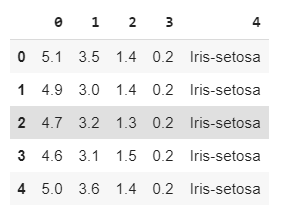
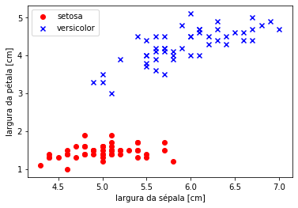

MODELO PERCEPTRON
Neste tutorial iremos elaborar um modelo de aprendizagem Supervisionada chamado perceptron simples. Iremos utilizar os dados do dataset iris, mais especificamente os dados de duas tipagem de plantas, a Iris Setosa e a Iris versicolor.Estamos utilizando dois dados de saída pois iremos fazer uma análise de classificação linear simples, ou seja, com a função de ativação degrau bipolar. Como estamos utilizando um regressão simples, iremos utilizar apenas duas características de entradas de dados. Comprimento da Sepala e Comprimento da Petala.
Modelo:

Iris Data Set - Informações dos dados:
- sepal length in cm = Comprimento da Sepala
- sepal width in cm = Largura da Sepala
- petal length in cm = Comprimento da Petala
-
petal width in cm = Larguta da Petala
-
class: -- Iris Setosa -- Iris Versicolour -- Iris Virginica
Manipulando os Dados
In [01]: import numpy as np
import pandas as pd
import matplotlib.pyplot as plt
from sklearn import model_selection
# Carregando o conjunto iris dataset do link oficial
In [02]: dataIris = pd.read_csv('https://archive.ics.uci.edu/ml/'
'machine-learning-databases/iris/iris.data', header=None)
In [03]: dataIris[:5]
Out[03]:

In [04]: dataIris.shape
Out[04]:
(150, 5)
# Obtendo o vetor de alvos [y] Iris Setosa e Iris versicolor.
In [05]: y = dataIris.iloc[0:100, 4].values
In [06]: y
Out[06]:
array(['Iris-setosa', 'Iris-setosa', 'Iris-setosa', 'Iris-setosa',
'Iris-setosa', 'Iris-setosa', 'Iris-setosa', 'Iris-setosa',
'Iris-setosa', 'Iris-setosa', 'Iris-setosa', 'Iris-setosa',
'Iris-setosa', 'Iris-setosa', 'Iris-setosa', 'Iris-setosa',
'Iris-setosa', 'Iris-setosa', 'Iris-setosa', 'Iris-setosa',
'Iris-setosa', 'Iris-setosa', 'Iris-setosa', 'Iris-setosa',
'Iris-setosa', 'Iris-setosa', 'Iris-setosa', 'Iris-setosa',
'Iris-setosa', 'Iris-setosa', 'Iris-setosa', 'Iris-setosa',
'Iris-setosa', 'Iris-setosa', 'Iris-setosa', 'Iris-setosa',
'Iris-setosa', 'Iris-setosa', 'Iris-setosa', 'Iris-setosa',
'Iris-setosa', 'Iris-setosa', 'Iris-setosa', 'Iris-setosa',
'Iris-setosa', 'Iris-setosa', 'Iris-setosa', 'Iris-setosa',
'Iris-setosa', 'Iris-setosa', 'Iris-versicolor', 'Iris-versicolor',
'Iris-versicolor', 'Iris-versicolor', 'Iris-versicolor',
'Iris-versicolor', 'Iris-versicolor', 'Iris-versicolor',
'Iris-versicolor', 'Iris-versicolor', 'Iris-versicolor',
'Iris-versicolor', 'Iris-versicolor', 'Iris-versicolor',
'Iris-versicolor', 'Iris-versicolor', 'Iris-versicolor',
'Iris-versicolor', 'Iris-versicolor', 'Iris-versicolor',
'Iris-versicolor', 'Iris-versicolor', 'Iris-versicolor',
'Iris-versicolor', 'Iris-versicolor', 'Iris-versicolor',
'Iris-versicolor', 'Iris-versicolor', 'Iris-versicolor',
'Iris-versicolor', 'Iris-versicolor', 'Iris-versicolor',
'Iris-versicolor', 'Iris-versicolor', 'Iris-versicolor',
'Iris-versicolor', 'Iris-versicolor', 'Iris-versicolor',
'Iris-versicolor', 'Iris-versicolor', 'Iris-versicolor',
'Iris-versicolor', 'Iris-versicolor', 'Iris-versicolor',
'Iris-versicolor', 'Iris-versicolor', 'Iris-versicolor',
'Iris-versicolor', 'Iris-versicolor', 'Iris-versicolor'],
dtype=object)
In [07]: y.shape
Out[07]:
(100,)
#Atribuindo um rótulo (numérico) as saídas.
#Iris Setosa == -1 e Iris versicolorm 1.
In [08]: y = np.where(y == 'Iris-setosa', -1, 1)
In [09]: y
Out[09]:
array([-1, -1, -1, -1, -1, -1, -1, -1, -1, -1, -1, -1, -1, -1, -1, -1, -1,
-1, -1, -1, -1, -1, -1, -1, -1, -1, -1, -1, -1, -1, -1, -1, -1, -1,
-1, -1, -1, -1, -1, -1, -1, -1, -1, -1, -1, -1, -1, -1, -1, -1, 1,
1, 1, 1, 1, 1, 1, 1, 1, 1, 1, 1, 1, 1, 1, 1, 1, 1,
1, 1, 1, 1, 1, 1, 1, 1, 1, 1, 1, 1, 1, 1, 1, 1, 1,
1, 1, 1, 1, 1, 1, 1, 1, 1, 1, 1, 1, 1, 1, 1])
#Separendo a variável de entrada do modelo. Comprimento da sepala e da petala.
In [10]: x = dataIris.iloc[0:100, [0, 2]].values
In [11]: x[0:10]
Out[11]:
array([[5.1, 1.4],
[4.9, 1.4],
[4.7, 1.3],
[4.6, 1.5],
[5. , 1.4],
[5.4, 1.7],
[4.6, 1.4],
[5. , 1.5],
[4.4, 1.4],
[4.9, 1.5]])
# Adicionando a coluna do bias (necessário em algoritmos baseados em perceptron/gradiente)
In [12]: x = np.c_[np.ones(x.shape[0]), x]
In [13]: x[0:10]
Out[13]:
array([[1. , 5.1, 1.4],
[1. , 4.9, 1.4],
[1. , 4.7, 1.3],
[1. , 4.6, 1.5],
[1. , 5. , 1.4],
[1. , 5.4, 1.7],
[1. , 4.6, 1.4],
[1. , 5. , 1.5],
[1. , 4.4, 1.4],
[1. , 4.9, 1.5]])
In [14]: x.shape
Out[14]:
(100, 3)
# Visualizando os dados (estamos pulando a coluna do bias)
In [15]: plt.scatter(x[:50, 1], x[:50, 2],
color='red', marker='o', label='setosa')
plt.scatter(x[50:100, 1], x[50:100, 2],
color='blue', marker='x', label='versicolor')
plt.xlabel('largura da sépala [cm]')
plt.ylabel('largura da pétala [cm]')
plt.legend(loc='upper left')
plt.show()
Out[15]:

#Dividindo o dataset em treino e teste.
In [16]: x_train, x_test, y_train, y_test = model_selection.train_test_split(x, y, test_size=0.2, random_state=0)
In [17]: x_train[:5]
Out[17]:
array([[1. , 5. , 1.6],
[1. , 6. , 4. ],
[1. , 4.6, 1.5],
[1. , 6.1, 4. ],
[1. , 4.8, 1.4]])
In [18]: x_train.shape
Out[18]:
(80, 3)
In [19]: y_train
Out[19]:
array([-1, 1, -1, 1, -1, -1, -1, 1, 1, 1, 1, 1, 1, 1, 1, -1, -1,
1, 1, 1, -1, 1, -1, -1, -1, -1, -1, -1, -1, -1, 1, 1, -1, -1,
-1, 1, -1, -1, -1, 1, -1, -1, 1, 1, 1, 1, -1, 1, -1, 1, -1,
-1, -1, 1, 1, 1, -1, 1, 1, 1, -1, -1, 1, -1, -1, 1, 1, -1,
1, 1, 1, -1, -1, 1, -1, 1, 1, 1, -1, -1])
In [20]: y_train.shape
Out[20]:
(80,)
Funçã (Ativação) - Somatória
#Função do ŷ ou h
In [21]: def h(x, thetas):
#A função dot faz multiplicação de matriz
#x.dot(thetas) é o mesmo que Σ(Xi.Wi)
#a função where faz o papel da função degrau. Se o
#output de x.dot(thetas) for maior que 0.0 retorne 1
#se for menor retorne -1.
return np.where(x.dot(thetas) >= 0.0, 1, -1)
Fução de Pesos
In [22]: def perceptron(x, y, iterations, alpha):
#Definindo os pesos = array([0., 0., 0.])
thetas = np.zeros(x_train.shape[1])
#Repetir por dez vezes
for i in range(iterations):
#Para cada entrada x e saída y.
for xi, yi in zip(x_train, y_train):
#Fórmula do perceptron para ajuste dos pesos
# [w = w + α * Et . xi]
# [Et = yi - ŷ] para ŷ = h
# ŷ ou h (é o y estimado, ou seja, )
thetas = thetas + alpha * (yi - h(xi, thetas)) * xi
return thetas
Treinando Modelo: Obtenção de pesos
# Treinando nosso modelo...
#Iterações
In [23]: iterations = 10
#Coef-Aprend
In [24]: alpha = 0.01
#Chamada-Func
#Thetas é o mesmo que pesos ou w
In [25]: thetas = perceptron(x_train, y_train, iterations, alpha)
#Pesos de W balanceados. (Equação da reta)
In [26]: thetasFinal = thetas
In [27]: print(thetasFinal)
Out[27]:
[-0.04 -0.112 0.216]
Testando Modelo: Predição de valores
In [28]: x_test.shape
Out[28]:
(20, 3)
In [29]: x_test
Out[29]:
array([[1. , 5. , 1.6],
[1. , 6.7, 4.7],
[1. , 4.7, 1.3],
[1. , 5.7, 4.5],
[1. , 6.6, 4.4],
[1. , 5. , 3.3],
[1. , 5.4, 1.3],
[1. , 6.1, 4.7],
[1. , 6.5, 4.6],
[1. , 5.7, 4.2],
[1. , 5.5, 4. ],
[1. , 5.8, 4. ],
[1. , 6. , 4.5],
[1. , 4.3, 1.1],
[1. , 5. , 1.5],
[1. , 4.8, 1.6],
[1. , 4.6, 1. ],
[1. , 4.8, 1.9],
[1. , 5.5, 1.4],
[1. , 4.4, 1.4]])
In [30]: y_test
Out[30]:
array([-1, 1, -1, 1, 1, 1, -1, 1, 1, 1, 1, 1, 1, -1, -1, -1, -1,
-1, -1, -1])
Função Ativação - Teste
#Teste
In [31]: def hFinal(x_test, thetasFinal):
return np.where(x_test.dot(thetasFinal) >= 0.0, 1, -1)
In [32]: y_est = hFinal(x_test, thetasFinal)
In [33]: y_est == y_test
Out[33]:
array([ True, True, True, True, True, True, True, True, True,
True, True, True, True, True, True, True, True, True,
True, True])
Deletando colunas de uma matriz(array) numpay.
import numpy as np
a = np.arange(12).reshape(3, 4)
print(a)
# [[ 0 1 2 3]
# [ 4 5 6 7]
# [ 8 9 10 11]]
print(np.delete(a, 1, 0))
# [[ 0 1 2 3]
# [ 8 9 10 11]]
print(np.delete(a, 1, 1))
# [[ 0 2 3]
# [ 4 6 7]
# [ 8 10 11]]
# print(np.delete(a, 1, 2))
# AxisError: axis 2 is out of bounds for array of dimension 2
Referencias:
-
Python Machine Learn - Sebastian Raschka https://www.amazon.com.br/Python-Machine-Learning-Sebastian-Raschka/dp/1789955750/ref=pd_sbs_14_t_0/146-7290337-7783406?_encoding=UTF8&pd_rd_i=1789955750&pd_rd_r=5750d573-f6c1-4f84-acf3-a26698a9fa4c&pd_rd_w=RXeqA&pd_rd_wg=5MTyX&pf_rd_p=adb10074-dc46-4d48-9abd-ebbbd99776aa&pf_rd_r=5X5JXYVPCJ010JQ0EEV3&psc=1&refRID=5X5JXYVPCJ010JQ0EEV3
-
http://wiki.icmc.usp.br/images/7/7b/Perceptron.pdf
-
https://juliocprocha.blog/2017/07/27/perceptron-para-classificacao-passo-a-passo/